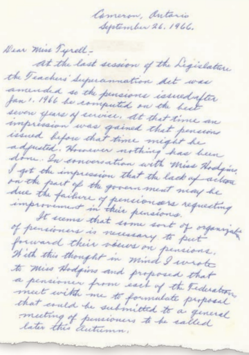
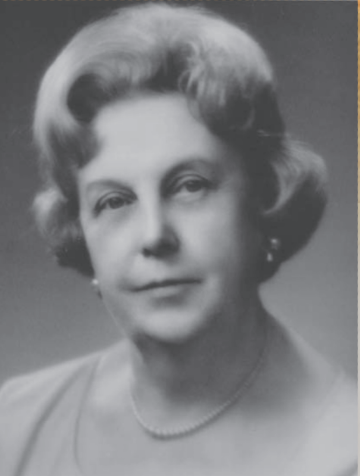

Our founders planted a seed with the vision of a better future for members. Over the years, our reach and impact have grown, but a better future—together remains our focus. Today, we’re an influential and caring national organization.
The roots of the RTO/ERO go back to October
1966, when the Ontario Teachers’
Federation set up an interim committee of 10 superannuated teachers. Their
mandate – look into the possibility of forming an organization for all
superannuated
teachers and to seek improvements in their pensions and allowances.
In
December 1966, the interim STO/ERO committee presented a brief to Ontario
Minister of Education William Davis, requesting a recalculation of teacher
pensions. Two days later, Davis announced that minimum pensions would be raised
to $1,200.

In this original letter written by Art McAdam in Ontario, he asked Marion Tyrrell to join him at a meeting of pensioners representing the various Ontario teacher affiliates to formulate a proposal regarding the improvement of pensions.
The Teaching Profession Act was amended, and the Ontario Teachers’ Federation had the privilege of granting associate membership to superannuated teachers. This enabled those teachers to join OTF that way and, thereby, become members of STO/ERO.
The Superannuated Teachers of Ontario
(STO) formed an organization to safeguard and promote the
professional welfare of the 7,000 Superannuated Teachers of Ontario.
The
Superannuated
Teachers of Ontario/ Les enseignantes et enseignants retraités de l’Ontario
officially began on March 14-15, 1968, when its governing senate met for the
first time in the second-floor boardroom of the Ontario Public School Men
Teachers’ Federation in Toronto. The voting delegates were representatives of
the five affiliates of the Ontario Teachers’ Federation.
RTO/ERO’s first
newsletter was distributed in November 1968. It was a doubled-sided
sheet.
In December 1968, a committee was established to organize STO/ERO
into geographic areas across Ontario, based on the provincial county board
system. That resulted in 10 areas, which grew to 12 in 1970. In 1972, the
province was reorganized into 21 subdivisions, which would be known as
districts. The senate created the districts, which would each have at least
three executive members.
Between 1968 and 1969, STO/ERO met with
Minister of Education William Davis seven times to discuss increasing the teachers’
pensions.

In 1968 the first secretary-treasurer, Marion Tyrrell, was awarded $500 for past services and an honorarium of $150 a month. The title of executive director replaced that of secretary-treasurer in 1985.
In the early 1960s, the Teachers’ Superannuation Commission (TSC) introduced a health plan for the use of retired teachers. With the introduction of OHIP, Health Services began in 1969 with an agreement between STO/ERO, the Superannuation Commission and the Co-Operative Health Services with deductions made by the Commission. With deductions made by the commission, pensioners paid $2 per month. Those with a spouse paid $4 per month, and a family paid $6.50 per month.
A Travel Committee forms to act as an agent for the purchase of tours directed primarily at the market represented by STO teachers.
Associate Membership was introduced.
More than 12,000 persons (including dependents) received pensions from the Teachers’ Superannuation Commission. Of those, approximately 8,000 were members of STO/ERO. The 90 factor was introduced, enabling teachers to retire when their age plus years of credit equalled ninety.
Previously, Senators were appointed according to their former affiliate membership, with the introduction of Districts, Senators are elected or appointed by each District.
More than 12,000 persons (including dependents) received pensions from the Teachers’ Superannuation Commission. Of those, approximately 8,000 were members of STO/ERO. The 90 factor was introduced, enabling teachers to retire when their age plus years of credit equalled ninety.
Previously, Senators were appointed according to their former affiliate membership, with the introduction of Districts, Senators are elected or appointed by each District.
More than 12,000 persons (including dependents) received pensions from the Teachers’ Superannuation Commission. Of those, approximately 8,000 were members of STO/ERO. The 90 factor was introduced, enabling teachers to retire when their age plus years of credit equalled ninety.
More than 12,000 persons (including dependents) received pensions from the Teachers’ Superannuation Commission. Of those, approximately 8,000 were members of STO/ERO. The 90 factor was introduced, enabling teachers to retire when their age plus years of credit equalled ninety.
Previously, Senators were appointed according to their former affiliate membership, with the introduction of Districts, Senators are elected or appointed by each District.